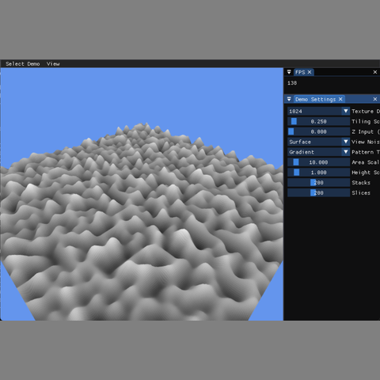

3D Graphics

This project implements Improved 3D Gradient Noise, also known as Perlin Noise, using GLSL. The goal of the assignment was to generate seamless procedural textures directly on the GPU and visualize the result both as a 2D texture slice and as a displaced 3D surface. The generated noise is stored in an offscreen framebuffer, allowing the same texture data to be reused for different visualization modes.
Unlike Value Noise, which interpolates random values at lattice points, Gradient Noise uses gradient direction vectors and dot products with local offset vectors. This produces smoother and more natural procedural patterns. The demo includes several pattern modes: plain gradient noise, fractal sum, turbulence, marble, and wood.
I extended the texture system to support multiple color formats, including RGBA8, RGBA32F, and R32F. This was required because the noise generation pass stores a single floating-point value per pixel. I also updated the framebuffer system so that its color attachment can be created with the requested texture format.
I registered the Gradient Noise demo in the demo factory and added the required source files to the build system. I then implemented the shader pipeline for generating and displaying the noise. The gradient noise shader uses a fixed permutation table, twelve gradient directions, quintic smoothing, and trilinear interpolation to evaluate 3D noise.
The generated noise values are remapped from the default range of [-1, 1] into [0, 1] so that they can be displayed correctly as grayscale texture values. I implemented the required procedural pattern modes by applying the same style of pattern generation used in the Value Noise assignment to the new Gradient Noise result.
For visualization, I created shaders for both a textured quad and a displaced surface. The texture view displays a 2D slice of the 3D noise volume, while the surface view samples the generated noise texture to offset a plane mesh into a terrain-like shape. ImGui controls allow the user to adjust the texture size, tiling scale, Z slice, pattern type, view mode, and surface settings interactively.
This assignment helped me understand the difference between CPU-generated procedural textures and shader-generated procedural textures. In the previous Value Noise assignment, the texture was generated on the CPU and uploaded to OpenGL. In this project, the noise is generated in a fragment shader and written into a framebuffer texture, which makes the rendering pipeline more GPU-driven.
The most important concept was understanding how Improved Gradient Noise evaluates each lattice cell. Instead of storing random color values, each lattice point chooses a gradient direction. The shader then computes dot products between those directions and the local offset vectors, smooths the interpolation values with the quintic fade function, and blends the eight corner results together.
Another important challenge was matching the visual behavior of the procedural patterns. The marble and wood modes were not meant to be photorealistic materials; they were procedural pattern examples based on the same style used in the Value Noise demo. Reusing that structure made the final result more consistent with the course examples.
Overall, this project improved my understanding of floating-point texture formats, framebuffer-based rendering, seamless tileable noise, shader programming, and using procedural data for both texture display and geometry displacement.